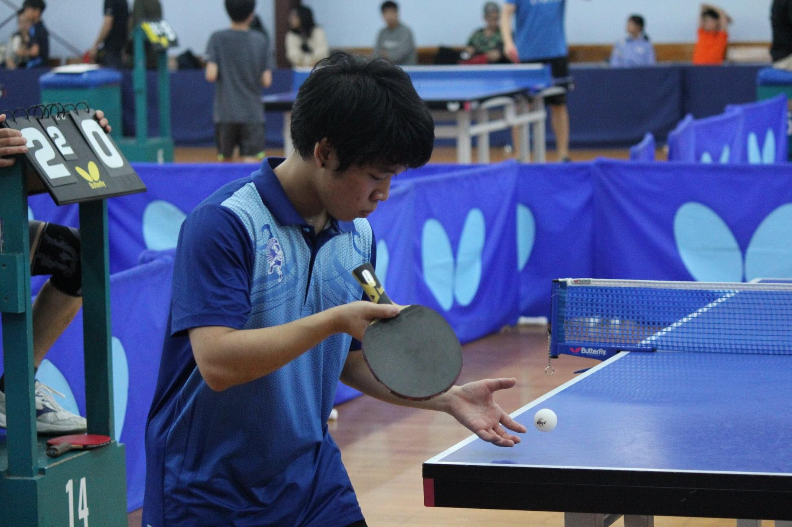

James Nguyen

About Me
- I am a New Zealand born Vietnamese
-
I love playing table tennis and have been playing since the age of 14
and I am also currently representing the Auckland Regional Team
- Enjoys working and building with electronics
-
Loves to cook and bake, my favourite meal to cook is steak with
scalloped potatoes and for baking I enjoy baking cookies
-
Places in the world that I have travelled to: Australia, Japan,
Singapore and Vietnam
- Hits the gym to lose the calories from the cooking and baking!
